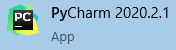
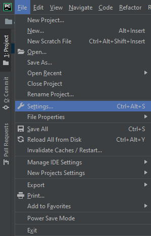
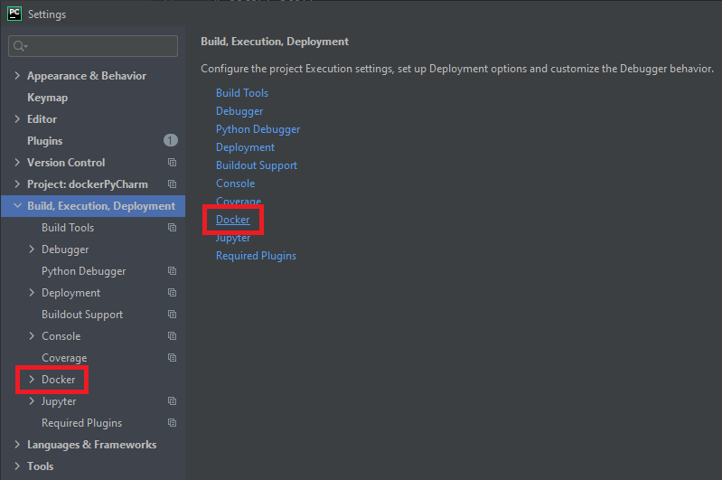
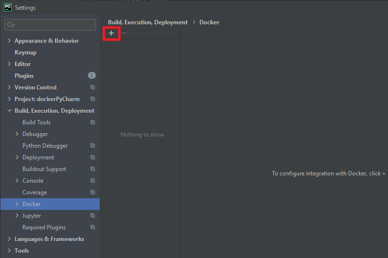
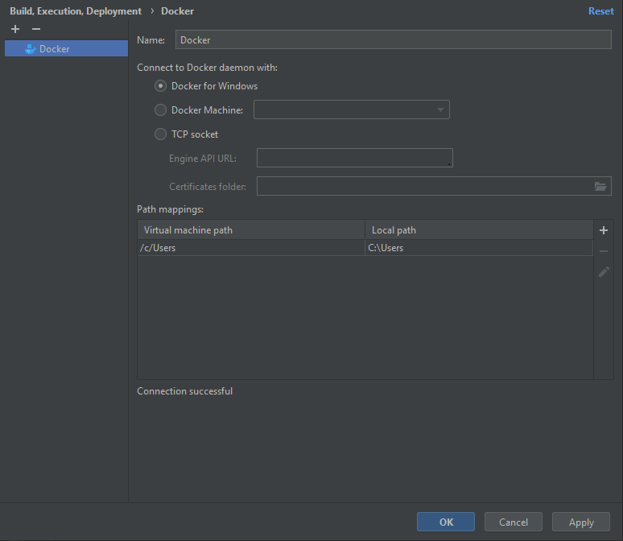
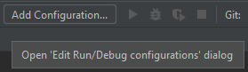
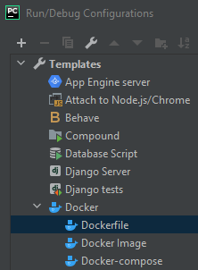
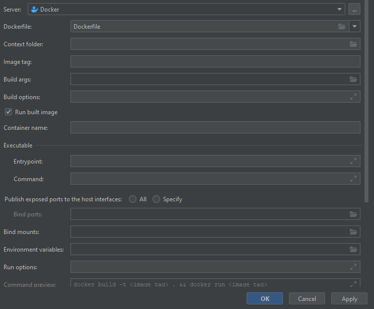
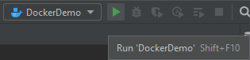
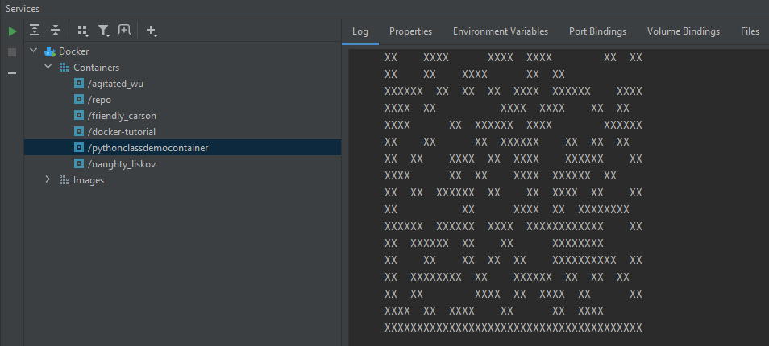

Below you will find a tutorial on how to connect Docker and PyCharm. The tutorial assumes you have both Docker and PyCharm installed. The tutorial also assumes you have pre-existing Python code and Dockerfiles or at least knowledge to create them. If you do not, sample files can be downloaded in the appropriate section.
Ensure that the Docker Desktop application is running. If it is not, launch the application.
Launch the PyCharm application.
Verify that both applications are now running without any issues.
Navigate to the File option across the top ribbon and expand the menu.
From the File menu, navigate down to Settings as seen above.
Launch the Settings screen and Navigate to the Build, Execution, Deployment section displayed on the screen below.
From here, select Docker either from the Menu Tree or the link within the Settings Window. This will open the Docker specific Settings Window.
If you have not previously connected any Docker instances, the section below will be blank. Click the + button highlighter below to add a new Docker instance.
From here, you will have several options depending on which version of Docker you have installed. Ideally, you will have Docker Desktop installed and the screen will be identical to the one below.
On the screen above make sure to change the Name section if you would like to identify the Docker instance by any other name. The default paths should also work unless you have a non-default path for Docker.
Once everything has been validated, click the Ok button.
At this point everything should be connected and ready to added to our Runtime Configuration. To start this process, click the Add Configuration across the top of the PyCharm application as seen below.
This will open the Runtime Configuration window. From the Template Tree, choose Docker and then Dockerfile.
This will open all of the Docker specific settings that we will need.
As you can see, there are several settings here that can be entered. The most important ones are Dockerfile, Context Folder, and Run Built Image. Using the dropdown, select your Dockerfile. If you do not have one, a sample file can be downloaded below. Next you will want to ensure you have a "." in the Context Folder line. Lastly, ensure the Run Built Image checkbox is checked.
At this point you should be able to run your Python Code within the Docker container by pressing the Play button across the top.
The Python program will then start to output across the bottom of the PyCharm application.
If the sample code from the previous section was used, the output should be similar to the one above.